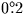

DOUBLE PRECISION PMAT(3,3)
:
CALL sla_PREC(2000D0,1985.372D0,PMAT)
It is instructive to examine the resulting matrix:
+0.9999936402 +0.0032709208 +0.0014214694
-0.0032709208 +0.9999946505 -0.0000023247
-0.0014214694 -0.0000023248 +0.9999989897
Note that the diagonal elements are close to unity, and the other elements are small. This shows that over an interval as short as 15 years the precession isn't going to move a position vector very far (in this case about ).
For convenience, a direct  to
to  precession routine is
also provided
(sla_PRECES),
suitable for either the old or the new system (but not a
mixture of the two).
precession routine is
also provided
(sla_PRECES),
suitable for either the old or the new system (but not a
mixture of the two).
SLALIB provides only one nutation model, the new, IAU 1980 model, implemented in the routine sla_NUTC. This returns the components of nutation in longitude and latitude (and also provides the obliquity) from which a nutation matrix can be generated by calling sla_DEULER (and from which the equation of the equinoxes, described later, can be found). Alternatively, the nutation matrix can be generated in a single call by using sla_NUT.
A rotation matrix for applying the entire precession/nutation transformation in one go can be generated by calling sla_PRENUT.
SLALIB --- Positional Astronomy Library